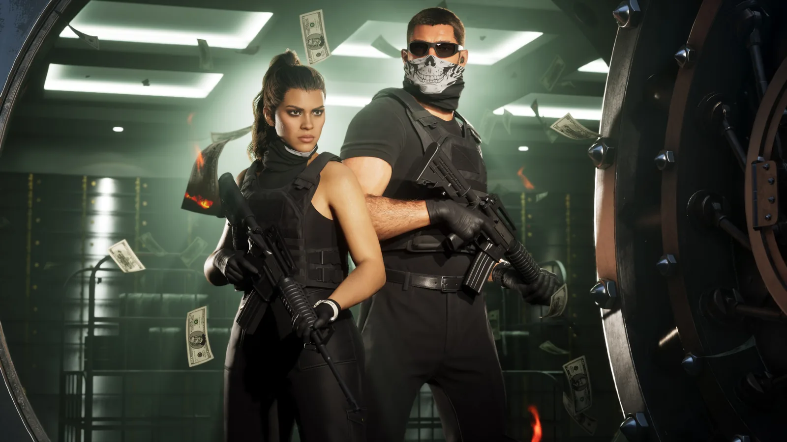
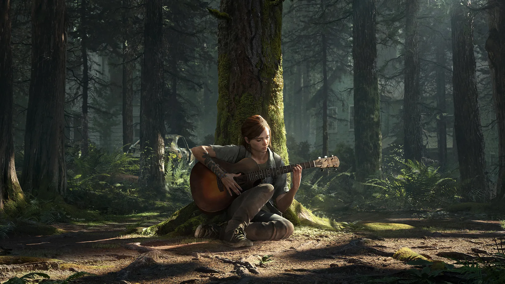
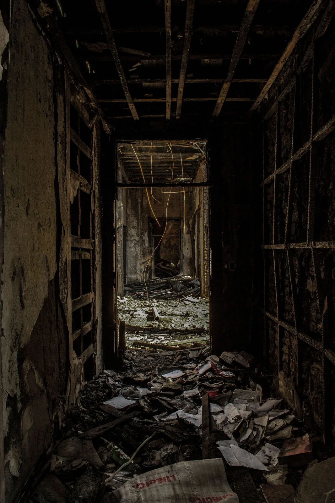

GTA VI
Vice City en GTA VI: qué cambia y qué sabemos de la ciudad
Una guía de Vice City en GTA VI: su papel en Leonida, las referencias oficiales y lo que las imágenes todavía no permiten confirmar.
Listas editoriales con criterios claros, contexto y fuentes.
Lectura destacadaUna guía de Vice City en GTA VI: su papel en Leonida, las referencias oficiales y lo que las imágenes todavía no permiten confirmar.
Ordenadas por última actualización. Cada artículo muestra la fecha de revisión.

Una guía para entender los easter eggs, descubrir secretos con paciencia y comprobar si un hallazgo está confirmado o es un rumor.

Qué sabemos del mundo abierto de GTA VI y cómo valorar su variedad sin repetir cifras de mapas no oficiales.

Antagonistas de anime memorables por su ideología, presencia y conflicto con los protagonistas, con criterios claros y aviso de spoilers leves.

De fútbol y baloncesto a carreras y skate: juegos deportivos para distintos estilos, plataformas y niveles de simulación.

Recomendaciones para Xbox Series X|S y el ecosistema Xbox, con estilos variados y recordatorio de comprobar plataforma y catálogo.

Juegos multijugador de PS5 para cooperar, competir o hacer una partida rápida, con notas sobre juego cruzado y suscripciones.
Explora la biblioteca por tema y formato.

Juegos recientes para PC de géneros distintos, elegidos por diseño, personalidad y opciones de configuración, sin puntuaciones inventadas.

Juegos para PC que se pueden probar sin pagar por el acceso inicial, con atención a compras opcionales y requisitos de cuenta.

Juegos para dos con estilos diferentes: campañas cooperativas, partidas locales, estrategia y competición amistosa.

Juegos para Switch que aprovechan sesiones portátiles o juego local, con una selección que cubre géneros y ritmos distintos.

Selección de juegos cooperativos con distintos ritmos, tamaños de grupo y formas de coordinarse, explicada con criterios editoriales.

Selección de juegos asociados al ecosistema PlayStation, con aventuras narrativas, acción y propuestas que conviene comprobar en la tienda actual.

Una selección histórica de consolas por su biblioteca, diseño y efecto en la industria, no por potencia actual ni ventas aisladas.

Anime de terror y suspense para distintos gustos, desde horror psicológico hasta fantasía oscura, con avisos de tono y contenido.

Recomendaciones de anime romántico que van de la comedia escolar al drama adulto, con el tono y el ritmo de cada serie explicados.

Una selección de fantasía anime que combina aventura, comedia, drama y exploración, explicando qué ofrece cada mundo.

Anime de ciencia ficción para quien busca cyberpunk, viajes espaciales, dilemas tecnológicos o futuros especulativos.
Anime destacado de 2026: estrenos de temporada, títulos en emisión y el contexto correcto de los Anime Awards.
Alternativas a Grand Theft Auto según lo que buscas: conducción, libertad, crimen, exploración o una ciudad llena de historias.

Juegos fáciles de empezar para una pausa, una sesión larga o una partida con amigos, con recomendaciones por ritmo y plataforma.

Mundos, campañas y juegos rejugables que pueden acompañarte durante mucho tiempo, con criterios para valorar si el contenido merece la pena.

Series y películas que influyeron en géneros, audiencias o formas de producción, con contexto y límites de la selección.

Una selección editorial de animes que alcanzaron reconocimiento internacional y marcaron distintas generaciones, sin confundir fama con calidad universal.

Una guía editorial de series destacadas, sin atribuir puntuaciones o un ranking oficial a Crunchyroll.

Una selección editorial de juegos de PS5 con estilos distintos y motivos concretos para recomendarlos.

Diez mundos abiertos de PC elegidos por libertad, ambientación y variedad de actividades, con consejos para elegir.

Una guía sobre los grandes superventas y los problemas de comparar ventas, unidades y jugadores activos.
Juegos free-to-play recomendables y una guía clara sobre temporadas, compras opcionales y acceso online.
Una selección editorial de figuras reconocibles que han definido sagas, géneros y generaciones de jugadores.
Una selección de juegos sociales para sofá y online, con notas sobre cross-play y tamaño de grupo.
Una selección editorial de anime de acción, desde fantasía y superpoderes hasta samuráis y ciencia ficción.
Diez juegos con narración memorable y estilos diversos, seleccionados por construcción de personajes y ritmo.
Una selección de anime narrativo para quienes buscan personajes, giros y mundos desarrollados con cuidado.
Una selección de supervivencia para jugar en solitario o en grupo, con diferencias de tono y exigencia.

Series compactas y miniseries para terminar una historia sin comprometerse con cientos de episodios.

Ocho juegos de terror con enfoques distintos, desde supervivencia y exploración hasta multijugador cooperativo.

Una selección de personajes extraordinarios y una metodología prudente para evitar un ranking de fuerza engañoso.

Una selección editorial de antagonistas memorables por motivación, presencia y relación con el jugador.
Franquicias con identidades fuertes que han sabido evolucionar entre generaciones y formatos.